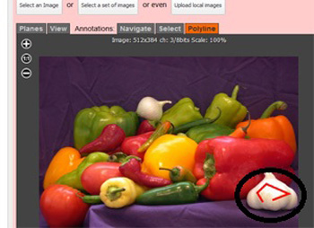
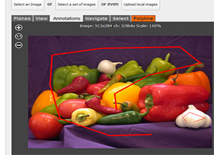
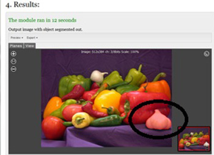

This application allows the user to find a segmentation on an image, provided two strokes or polylines. First polyline should be inside the object of interest (foreground) and the second polyline across the background.
Steps to run the algorithm:
1. Select an image to be analyzed. This image can either come from images already loaded into your account or publicly available images. User can even upload images on this page itself.
2. Mark a polyline on the object of interest. Select polyline from the menu and click on the object of interest. Your polyline should look similar to polyline marked below (highlighted by a black ellipse).

3. Similarily, mark a polyline on the background (or region that is not of interest).

4. Press the 'Run' button. Analysis may take some time depending on the image.
5. If the algorithm segments object successfully, the segmented object will be marked as a translucent polygon. The coordinates of this polygon are stored on the execution record. These can be exported right here or can be accessed at a later date.
